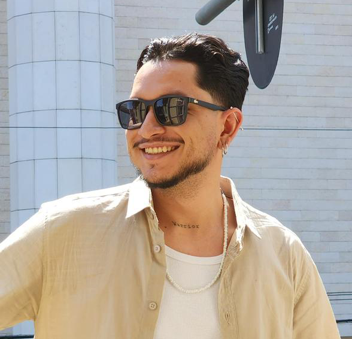

Na Timeline Studio, atuamos há mais de 5 anos no mercado.
Com uma equipe especializada em edição de vídeos, animações 2D e 3D, além de produções gráficas de alto impacto.
Cada projeto é único. Cada frame conta uma história. Criamos experiências visuais com ritmo, emoção e propósito.
Com atuação nacional e foco em excelência, nossa missão é elevar o padrão visual de marcas, criadores e empresas.
FUNDADORES
Conheça as mentes por trás da Timeline.
Daillan Rodrigues
Comecei cedo, aos 16 anos trabalhei como Designer gráfico até os 19 anos. Aos 20 anos fui cinegrafista e editor junior na TV AMAZÔNICA, filiada Globo Sat, aos 21 anos me tornei Diretor de arte e Motion na agência PWS e aos 23 anos dei início à carreira como editor de vídeo e Creator.

Lílhiquer Freitas
Trabalho com comunicação visual desde os 18 anos, me especializei como motion designer há mais de 5 anos. Sou nortista, do Acre, possuo vasta experiência com animação de campanhas publicitárias, identidade visual, conteúdo para redes sociais, selos e material gráfico online e offline, no geral.